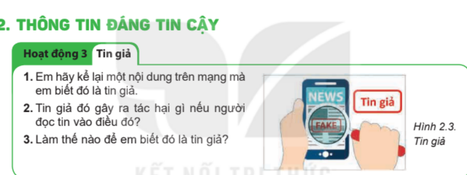
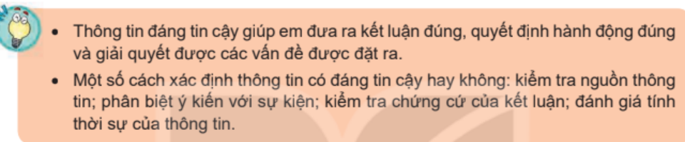
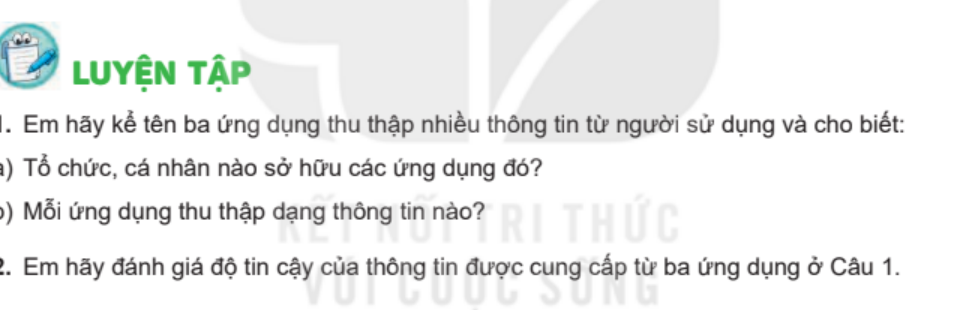
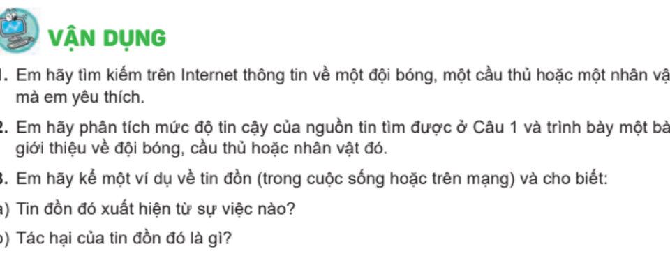

KẾ HOẠCH BÀI DẠY
MÔN: TIN HỌC 8 – BỘ SÁCH KẾT NỐI TRI THỨC VỚI CUỘC SỐNG
CHỦ ĐỀ 2: TỔ CHỨC LƯU TRỮ, TÌM KIẾM VÀ TRAO ĐỔI THÔNG TIN
BÀI 2: THÔNG TIN TRONG MÔI TRƯỜNG SỐ
Thời gian thực hiện: 1 tiết (45 phút) – SGK trang 12-13
I. MỤC TIÊU
1) Kiến thức
- Nêu được tầm quan trọng của việc khai thác thông tin đáng tin cậy; nhận biết được các dạng thông tin không đáng tin cậy: thông tin không trung thực, mang tính chất lừa dối; thông tin đồn thổi dẫn đến kết luận thiếu căn cứ; thông tin thiếu kiểm chứng dẫn đến quyết định sai lầm.
- Nêu và vận dụng được bốn cách xác định thông tin có đáng tin cậy hay không: kiểm tra nguồn thông tin; phân biệt ý kiến với sự kiện; kiểm tra chứng cứ của kết luận; đánh giá tính thời sự của thông tin.
- Nêu được tác hại của tin giả, tin đồn trên mạng và phân biệt được ý kiến (quan điểm, mang nhiều cảm xúc và định kiến cá nhân) với sự kiện (điều được nói là đã xảy ra trong thực tế).
2) Năng lực
a) Năng lực chung
- Tự chủ và tự học: chủ động đọc SGK, tự rút ra các cách nhận biết thông tin đáng tin cậy.
- Giao tiếp và hợp tác: trao đổi theo cặp, phối hợp trong nhóm để hoàn thành nhiệm vụ; lắng nghe và nhận xét ý kiến của bạn.
- Giải quyết vấn đề và sáng tạo: vận dụng các cách đã học để đánh giá độ tin cậy của một số thông tin cụ thể; nêu cách ứng xử với tin đồn.
b) Năng lực Tin học
- NLb (Ứng xử phù hợp trong môi trường số): nhận biết tin giả, tin đồn và tác hại của chúng; không vội tin và không chia sẻ thông tin chưa được kiểm chứng.
- NLd (Ứng dụng công nghệ thông tin và truyền thông trong học và tự học): đánh giá được mức độ tin cậy của thông tin tìm thấy trên Internet để phục vụ học tập.
- NLe (Hợp tác trong môi trường số): phối hợp với bạn trong nhóm để phân tích, đánh giá các thông tin cụ thể; trao đổi kết quả với cả lớp.
c) Năng lực số (NLS)
- 1.2.TC2 – Đánh giá dữ liệu, thông tin và nội dung số (mức L8–L9): phân tích, so sánh và đánh giá được độ tin cậy của nguồn thông tin, nội dung số bằng bốn cách xác định độ tin cậy.
- 1.1.TC2 – Duyệt, tìm kiếm và lọc dữ liệu, thông tin và nội dung số (mức L8–L9): tìm kiếm trên Internet thông tin về một đội bóng, một cầu thủ hoặc một nhân vật yêu thích (Vận dụng 1).
d) Năng lực Trí tuệ nhân tạo (AI)
- B1.1 – Rủi ro với AI (Khung 3439, lớp 8): nêu được công cụ AI (ví dụ trợ lí trò chuyện) cũng có thể đưa ra kết luận sai, vì vậy thông tin do AI cung cấp cần được kiểm tra bằng các cách xác định độ tin cậy đã học (liên hệ ngắn ở Hoạt động 2).
- A1.2 – Rủi ro khi lạm dụng AI: không tin ngay, không phụ thuộc hoàn toàn vào AI; giữ tư duy phản biện khi tiếp nhận thông tin.
3) Phẩm chất
- Trung thực: tôn trọng sự thật, không bịa đặt hoặc chia sẻ tin đồn.
- Trách nhiệm: có trách nhiệm với thông tin mình tìm kiếm, sử dụng và chia sẻ trên mạng.
II. THIẾT BỊ DẠY HỌC VÀ HỌC LIỆU
- Giáo viên: máy tính kết nối máy chiếu hoặc Tivi; bài giảng điện tử; SGK Tin học 8 (Hình 2.3, hộp ghi nhớ và các bài tập ở trang 12-13); Phiếu học tập số 1 (phụ lục); giấy khổ lớn hoặc bảng nhóm cho 4 nhóm; ứng dụng trắc nghiệm Quizizz (tuỳ chọn).
- Học sinh: SGK Tin học 8 (trang 12, 13), vở ghi bài, thiết bị tra cứu thông tin (nếu có).
III. TIẾN TRÌNH DẠY HỌC (45 phút)
1. Khởi động (5 phút) – Hoạt động 3 "Tin giả" (SGK trang 12)
a) Mục tiêu: Gợi mở nhu cầu học: HS nhận ra trên mạng có tin giả và tin giả gây hại, từ đó cần biết cách xác định thông tin đáng tin cậy (NLS 1.2.TC2).
b) Nội dung: HS quan sát Hình 2.3 và thảo luận cặp đôi ba câu hỏi của Hoạt động 3 (SGK trang 12): (1) Kể lại một nội dung trên mạng mà em biết đó là tin giả; (2) Tin giả đó gây ra tác hại gì nếu người đọc tin vào điều đó; (3) Làm thế nào để em biết đó là tin giả.
c) Sản phẩm: Câu trả lời của HS: nêu được ví dụ tin giả, tác hại của tin giả và dấu hiệu nhận ra tin giả; nhận thức được cần biết cách xác định thông tin đáng tin cậy.
d) Tổ chức thực hiện:
| Hoạt động của giáo viên | Hoạt động của học sinh |
|---|---|
Bước 1: Chuyển giao nhiệm vụ - GV chiếu Hình 2.3 và Hoạt động 3 (SGK trang 12):  Hình 2.3: Tin giả (SGK trang 12) - GV yêu cầu HS thảo luận cặp đôi trong 2 phút ba câu hỏi: 1. Em hãy kể lại một nội dung trên mạng mà em biết đó là tin giả. 2. Tin giả đó gây ra tác hại gì nếu người đọc tin vào điều đó? 3. Làm thế nào để em biết đó là tin giả? | Bước 1: Chuyển giao nhiệm vụ - HS quan sát Hình 2.3, đọc câu hỏi, nhận nhiệm vụ. |
Bước 2: Thực hiện nhiệm vụ - GV quan sát, gợi ý HS nhớ lại các tin nhắn, bài đăng, video mà mình từng gặp. | Bước 2: Thực hiện nhiệm vụ - HS suy nghĩ cá nhân 1 phút (Think), trao đổi với bạn cùng bàn 1 phút (Pair), ghi ý chính ra nháp. |
Bước 3: Báo cáo, thảo luận - GV mời 2 cặp HS trình bày (Share); mời cả lớp nhận xét, bổ sung. | Bước 3: Báo cáo, thảo luận - HS trình bày ví dụ tin giả, tác hại và cách nhận biết; nhận xét ý kiến của bạn. Dự kiến: Ví dụ tin giả: tin đồn thất thiệt về thiên tai, dịch bệnh; tin nhắn báo trúng thưởng yêu cầu nạp thẻ cào; quảng cáo thuốc, thực phẩm chức năng sai sự thật. Dự kiến: Tác hại: gây hoang mang, thiệt hại tiền bạc, ảnh hưởng sức khoẻ, xúc phạm danh dự của người khác. Dự kiến: Cách nhận biết: xem nguồn đăng tin, so sánh với nhiều nguồn khác, thấy nội dung thiếu chứng cứ hoặc quá giật gân. |
Bước 4: Kết luận, dẫn dắt vào bài - GV nhận xét, dẫn dắt: "Trên mạng có rất nhiều thông tin nhưng không phải thông tin nào cũng đáng tin cậy. Vậy làm thế nào để xác định thông tin đáng tin cậy? Chúng ta cùng tìm hiểu mục 2: Thông tin đáng tin cậy." | Bước 4: Kết luận, dẫn dắt vào bài - HS lắng nghe, ghi nhận nhiệm vụ của bài học. |
2. Hoạt động 1: Thông tin không đáng tin cậy và tầm quan trọng của thông tin đáng tin cậy (8 phút – SGK trang 12)
a) Mục tiêu: HS nhận biết được ba dạng thông tin không đáng tin cậy; giải thích được vì sao cần xác định thông tin đáng tin cậy (NLS 1.2.TC2).
b) Nội dung: HS đọc phần đầu mục 2 (SGK trang 12); xếp các ví dụ tin giả ở phần Khởi động vào các dạng thông tin không đáng tin cậy; trả lời: Vì sao việc xác định thông tin đáng tin cậy lại quan trọng?
c) Sản phẩm: Ba dạng thông tin không đáng tin cậy kèm ví dụ; giải thích được tầm quan trọng của thông tin đáng tin cậy.
d) Tổ chức thực hiện:
| Hoạt động của giáo viên | Hoạt động của học sinh |
|---|---|
Bước 1: Chuyển giao nhiệm vụ - GV yêu cầu HS đọc phần đầu mục 2 (SGK trang 12) và hoàn thành trong 3 phút: 1. Thông tin không đáng tin cậy có thể là những dạng nào? 2. Xếp các ví dụ tin giả đã nêu ở phần Khởi động vào từng dạng. 3. Vì sao việc xác định thông tin đáng tin cậy lại rất quan trọng? | Bước 1: Chuyển giao nhiệm vụ - HS đọc SGK, nhận nhiệm vụ. |
Bước 2: Thực hiện nhiệm vụ - GV quan sát, hỗ trợ HS gặp khó khăn khi xếp ví dụ. | Bước 2: Thực hiện nhiệm vụ - HS đọc SGK, thảo luận cặp đôi, ghi kết quả vào vở. |
Bước 3: Báo cáo, thảo luận - GV mời 2-3 HS trình bày; mời HS khác nhận xét. | Bước 3: Báo cáo, thảo luận - HS trình bày kết quả; nhận xét, bổ sung. Dự kiến: Ba dạng thông tin không đáng tin cậy (SGK trang 12): (1) thông tin không trung thực, mang tính chất lừa dối; (2) thông tin đồn thổi, dẫn em đến kết luận thiếu căn cứ; (3) thông tin thiếu kiểm chứng, dẫn em đến quyết định sai lầm. Dự kiến: Ví dụ: tin nhắn trúng thưởng yêu cầu nạp thẻ cào thuộc dạng lừa dối; tin đồn thiên tai thuộc dạng đồn thổi; tin chữa bệnh chưa được kiểm chứng thuộc dạng thiếu kiểm chứng. Dự kiến: Thông tin không đáng tin cậy có giá trị sử dụng thấp, thậm chí không sử dụng được; xác định được thông tin đáng tin cậy giúp em đưa ra quyết định đúng đắn. |
Bước 4: Kết luận - GV chốt kiến thức và chuyển ý: "Vậy có những cách nào để biết một thông tin có đáng tin cậy hay không?" | Bước 4: Kết luận - HS ghi nhớ nội dung chính vào vở. |
3. Hoạt động 2: Bốn cách xác định thông tin có đáng tin cậy hay không (12 phút – SGK trang 12, 13)
a) Mục tiêu: HS nêu và vận dụng được bốn cách xác định thông tin có đáng tin cậy hay không; bước đầu nhận ra thông tin do AI đưa ra cũng cần được kiểm tra (NLS 1.2.TC2; AI B1.1, A1.2).
b) Nội dung: Mỗi nhóm đọc một cách xác định trong SGK trang 12-13 và trình bày cho cả lớp; cả lớp đọc hai ý của hộp ghi nhớ ở trang 13.
c) Sản phẩm: Bảng tóm tắt bốn cách xác định thông tin đáng tin cậy kèm ví dụ SGK; nội dung hộp ghi nhớ trang 13.
d) Tổ chức thực hiện:
| Hoạt động của giáo viên | Hoạt động của học sinh |
|---|---|
Bước 1: Chuyển giao nhiệm vụ (1 phút) - GV chia lớp thành 4 nhóm, mỗi nhóm nghiên cứu một cách xác định trong SGK trang 12-13: + Nhóm 1: Xác định nguồn thông tin (Thẩm quyền, uy tín của tổ chức hay cá nhân cung cấp thông tin ảnh hưởng thế nào? Vì sao thông tin từ blog có thể kém tin cậy?). + Nhóm 2: Phân biệt ý kiến và sự kiện (Ý kiến là gì? Vì sao ý kiến có độ tin cậy thấp hơn sự kiện?). + Nhóm 3: Kiểm tra chứng cứ của kết luận (Vì sao kết luận không có chứng cứ có độ tin cậy rất thấp?). + Nhóm 4: Đánh giá tính thời sự của thông tin (Vì sao thời điểm công bố thông tin quan trọng?). - GV yêu cầu mỗi nhóm ghi kết quả (nội dung chính và ví dụ trong SGK) vào giấy khổ lớn theo kĩ thuật Khăn trải bàn. | Bước 1: Chuyển giao nhiệm vụ (1 phút) - HS nhận nhiệm vụ, chia vai trong nhóm. |
Bước 2: Thực hiện nhiệm vụ (5 phút) - GV quan sát, hỗ trợ các nhóm; nhắc HS dùng ví dụ trong SGK. | Bước 2: Thực hiện nhiệm vụ (5 phút) - HS mỗi HS đọc SGK và ghi ý kiến riêng vào phần của mình, sau đó cả nhóm thống nhất kết quả vào giấy khổ lớn. |
Bước 3: Báo cáo, thảo luận (4 phút) - GV mời đại diện từng nhóm trình bày (1 phút/nhóm); các nhóm khác nhận xét, bổ sung. | Bước 3: Báo cáo, thảo luận (4 phút) - HS trình bày, nhận xét. Dự kiến: Xác định nguồn thông tin: thẩm quyền và uy tín của tổ chức hay cá nhân cung cấp thông tin ảnh hưởng đến giá trị và độ tin cậy của thông tin. Ví dụ: thông tin từ blog có độ tin cậy thấp vì ai cũng có thể viết blog; nhà sản xuất có thể phóng đại lợi ích của sản phẩm mình cung cấp, hạ thấp vai trò của đối thủ cạnh tranh. Dự kiến: Phân biệt ý kiến và sự kiện: ý kiến là quan điểm, không phải sự kiện; độ tin cậy của ý kiến thấp hơn sự kiện vì mang nhiều cảm xúc và định kiến cá nhân. Ví dụ: phát biểu "Tôi tin rằng việc đó đã xảy ra!" không có nghĩa là sự kiện được nói tới đã xảy ra trong thực tế. Dự kiến: Kiểm tra chứng cứ của kết luận: kết luận không có chứng cứ giống như ý kiến cá nhân nên có độ tin cậy rất thấp. Ví dụ: nhận xét "Tôi nghĩ đây là bộ phim hoạt hình hay nhất mọi thời đại" là quan điểm cá nhân, cần xử lí thận trọng. Dự kiến: Đánh giá tính thời sự của thông tin: thời điểm công bố quyết định thông tin còn ý nghĩa hay đã lỗi thời. Ví dụ: nội dung những trang web đã lâu không được cập nhật thường có độ tin cậy thấp. |
Bước 4: Kết luận, nhận định (2 phút) - GV chiếu hộp ghi nhớ (SGK trang 13) và chốt kiến thức:  Hộp ghi nhớ (SGK trang 13) - GV liên hệ ngắn: công cụ AI (ví dụ trợ lí trò chuyện) cũng có thể đưa ra kết luận sai hoặc không nêu được nguồn, nên thông tin do AI cung cấp cũng phải được kiểm tra bằng các cách trên; không tin ngay (liên hệ B1.1, A1.2). | Bước 4: Kết luận, nhận định (2 phút) - HS đọc hộp ghi nhớ, ghi vào vở. Dự kiến: Thông tin đáng tin cậy giúp em đưa ra kết luận đúng, quyết định hành động đúng và giải quyết được các vấn đề được đặt ra. Dự kiến: Một số cách xác định thông tin có đáng tin cậy hay không: kiểm tra nguồn thông tin; phân biệt ý kiến với sự kiện; kiểm tra chứng cứ của kết luận; đánh giá tính thời sự của thông tin. |
4. Luyện tập (13 phút – SGK trang 13)
a) Mục tiêu: HS vận dụng kiến thức vừa học để làm bài tập Luyện tập 1, 2 (SGK trang 13) và phân tích độ tin cậy của một số thông tin cụ thể (NLS 1.2.TC2).
b) Nội dung: Nhiệm vụ 1 (7 phút): làm Câu 1, Câu 2 mục Luyện tập (SGK trang 13). Nhiệm vụ 2 (6 phút): hoàn thành Phiếu học tập số 1 (GV tự soạn dựa trên nội dung trang 12-13).
c) Sản phẩm: Câu trả lời Luyện tập 1, 2 của HS; Phiếu học tập số 1 đã điền đủ.
d) Tổ chức thực hiện:
| Hoạt động của giáo viên | Hoạt động của học sinh |
|---|---|
Bước 1: Chuyển giao nhiệm vụ - GV Nhiệm vụ 1 (7 phút): chiếu mục Luyện tập (SGK trang 13), yêu cầu HS làm việc theo cặp:  Mục Luyện tập (SGK trang 13) + Câu 1: Em hãy kể tên ba ứng dụng thu thập nhiều thông tin từ người sử dụng và cho biết: a) Tổ chức, cá nhân nào sở hữu các ứng dụng đó? b) Mỗi ứng dụng thu thập dạng thông tin nào? + Câu 2: Em hãy đánh giá độ tin cậy của thông tin được cung cấp từ ba ứng dụng ở Câu 1. - GV Nhiệm vụ 2 (6 phút): phát Phiếu học tập số 1 (phụ lục), yêu cầu HS áp dụng các cách xác định để đánh giá 4 mẩu thông tin (3 phút làm, 3 phút chữa; GV có thể chuyển 4 mẩu thông tin thành câu hỏi Quizizz để chữa nhanh). | Bước 1: Chuyển giao nhiệm vụ - HS nhận nhiệm vụ, đọc đề bài. |
Bước 2: Thực hiện nhiệm vụ - GV quan sát, gợi ý: với mỗi ứng dụng hãy hỏi "ai cung cấp?", "có thể kiểm chứng không?". | Bước 2: Thực hiện nhiệm vụ - HS làm Câu 1, Câu 2 vào vở; điền Phiếu học tập số 1 theo cặp. |
Bước 3: Báo cáo, thảo luận - GV mời 1-2 cặp trình bày Câu 1, 2; mời đại diện cặp chữa Phiếu học tập số 1; các cặp khác nhận xét. | Bước 3: Báo cáo, thảo luận - HS trình bày, nhận xét. Dự kiến: Câu 1 (ví dụ, HS có thể chọn ứng dụng khác): VNeID – chủ sở hữu là cơ quan nhà nước (Bộ Công an), thu thập thông tin định danh cá nhân như họ tên, ngày sinh, nơi cư trú; Google Maps – Google, thu thập vị trí, thông tin địa điểm do người dùng đóng góp; Facebook hoặc TikTok – công ti mạng xã hội sở hữu, thu thập thông tin cá nhân, hình ảnh, video, sở thích do người dùng đăng tải. Dự kiến: Câu 2: thông tin từ ứng dụng do cơ quan nhà nước quản lí có độ tin cậy cao; thông tin bản đồ nhìn chung khá tin cậy nhưng nhận xét của người dùng cần chọn lọc; thông tin trên mạng xã hội do nhiều người đăng tải nên độ tin cậy rất khác nhau, cần kiểm chứng. Dự kiến: Phiếu học tập số 1: xem đáp án ở phụ lục. |
Bước 4: Kết luận, nhận định - GV nhận xét, chuẩn hoá đáp án; nhắc lại: cần phối hợp cả bốn cách để đánh giá thông tin. | Bước 4: Kết luận, nhận định - HS ghi nhớ, sửa bài vào vở. |
5. Vận dụng (7 phút – SGK trang 13)
a) Mục tiêu: HS vận dụng cách xác định thông tin đáng tin cậy để tìm kiếm, đánh giá nguồn thông tin về một đội bóng, cầu thủ hoặc nhân vật yêu thích và phân tích một tin đồn (NLS 1.1.TC2, 1.2.TC2; AI A1.2).
b) Nội dung: Nhiệm vụ 1 (5 phút): thảo luận Vận dụng 1, 2, 3 (SGK trang 13). Nhiệm vụ 2 (2 phút): tổng kết bài học và dặn dò.
c) Sản phẩm: Nguồn thông tin HS tìm được kèm nhận xét độ tin cậy; một ví dụ về tin đồn với nguồn gốc và tác hại; thông điệp của bài học.
d) Tổ chức thực hiện:
| Hoạt động của giáo viên | Hoạt động của học sinh |
|---|---|
Bước 1: Chuyển giao nhiệm vụ - GV chiếu mục Vận dụng (SGK trang 13), yêu cầu HS trao đổi theo cặp (có thể dùng thiết bị tra cứu nếu có):  Mục Vận dụng (SGK trang 13) 1. Em hãy tìm kiếm trên Internet thông tin về một đội bóng, một cầu thủ hoặc một nhân vật mà em yêu thích. 2. Em hãy phân tích mức độ tin cậy của nguồn thông tin tìm được ở Câu 1 và trình bày một bài giới thiệu về đội bóng, cầu thủ hoặc nhân vật đó. 3. Em hãy kể một ví dụ về tin đồn (trong cuộc sống hoặc trên mạng) và cho biết: a) Tin đồn đó xuất hiện từ sự việc nào? b) Tác hại của tin đồn đó là gì? | Bước 1: Chuyển giao nhiệm vụ - HS nhận nhiệm vụ, chọn đối tượng tìm kiếm. |
Bước 2: Thực hiện nhiệm vụ - GV quan sát, nhắc HS áp dụng bốn cách xác định thông tin đáng tin cậy. | Bước 2: Thực hiện nhiệm vụ - HS tìm kiếm, so sánh các nguồn, ghi nhận xét về độ tin cậy; nghĩ ví dụ về tin đồn. |
Bước 3: Báo cáo, thảo luận - GV mời 2-3 HS trình bày; nhận xét. | Bước 3: Báo cáo, thảo luận - HS trình bày kết quả; nhận xét bạn. Dự kiến: Câu 1, 2: nguồn đáng tin cậy hơn là trang web chính thức của đội bóng, của tổ chức quản lí môn thể thao đó hoặc báo chính thống; nguồn kém tin cậy hơn là blog cá nhân, bài đăng nặc danh, trang tin giật gân. Dự kiến: Câu 3 (ví dụ minh hoạ): tin đồn xuất phát từ một sự việc bị hiểu sai hoặc bị thêm thắt khi truyền miệng; tác hại: gây hoang mang, ảnh hưởng đến danh dự của người bị nhắc đến. |
Bước 4: Kết luận và dặn dò - GV tổng kết: "Không tin ngay – Kiểm tra kỹ – Không chia sẻ tin đồn". - GV dặn dò: (1) Ôn lại hộp ghi nhớ (SGK trang 13) và bốn cách xác định thông tin đáng tin cậy; (2) Hoàn thành Vận dụng 2 (bài giới thiệu) nếu chưa xong. | Bước 4: Kết luận và dặn dò - HS lắng nghe, ghi nhận nhiệm vụ ôn tập ở nhà. |
IV. PHỤ LỤC HỌC LIỆU VÀ CÔNG CỤ ĐÁNH GIÁ
1. Phiếu học tập số 1: Đánh giá độ tin cậy của thông tin (GV tự soạn dựa trên nội dung SGK trang 12-13)
Thông tin: Họ và tên nhóm: ........................................................ Lớp: 8...... Thời gian: 3 phút
Áp dụng các cách xác định đã học để điền vào các cột 2, 3, 4 (bảng dưới đây là đáp án dự kiến của GV):
| Mẩu thông tin | Ý kiến hay sự kiện? | Nguồn đăng tải | Đánh giá độ tin cậy (Cao / Trung bình / Thấp) |
|---|---|---|---|
| 1. Thông báo tuyển sinh lớp 10 đăng trên cổng thông tin chính thức của Sở Giáo dục và Đào tạo. | Sự kiện | Cơ quan quản lí nhà nước về giáo dục | Cao |
| 2. Bình luận trên mạng xã hội: "Tôi nghĩ đây là bộ phim hoạt hình hay nhất mọi thời đại." | Ý kiến (quan điểm cá nhân) | Tài khoản cá nhân | Thấp (chỉ mang tính tham khảo, cần xử lí thận trọng) |
| 3. Quảng cáo: "Uống sữa này, chỉ sau 1 tuần chiều cao tăng thêm 10 cm, cam kết 100%." | Ý kiến phóng đại, thiếu chứng cứ | Nhà sản xuất tự quảng cáo sản phẩm | Thấp |
| 4. Bản tin dự báo thời tiết phát sóng hôm nay trên đài truyền hình quốc gia. | Sự kiện (dự báo) | Cơ quan truyền thông chính thống | Cao (thông tin mới, còn giá trị) |
2. Bảng Rubric đánh giá Năng lực số và Năng lực AI trong bài học
| Thành tố năng lực | Mức 1: Cần cố gắng | Mức 2: Đạt | Mức 3: Tốt |
|---|---|---|---|
| NLS 1.2.TC2 – Đánh giá độ tin cậy của thông tin | Chưa biết dựa vào cách nào để đánh giá; dễ tin mọi thứ đọc được trên mạng. | Nêu và áp dụng được 1-2 cách (như kiểm tra nguồn tin) nhưng còn lúng túng. | Vận dụng được cả bốn cách để đánh giá thông tin; phân biệt đúng ý kiến và sự kiện và giải thích được lí do. |
| NLS 1.1.TC2 – Tìm kiếm thông tin | Chỉ lấy kết quả đầu tiên tìm được. | Tìm được thông tin từ 1-2 nguồn và so sánh sơ lược. | Tìm và so sánh được nhiều nguồn; chọn được nguồn đáng tin cậy và giải thích lựa chọn. |
| NL AI B1.1, A1.2 – Kiểm tra thông tin do AI cung cấp | Tin ngay câu trả lời của AI, không kiểm tra. | Biết AI có thể sai nhưng chưa nêu được cách kiểm tra. | Biết dùng các cách xác định độ tin cậy để kiểm tra thông tin do AI cung cấp; không phụ thuộc hoàn toàn vào AI. |